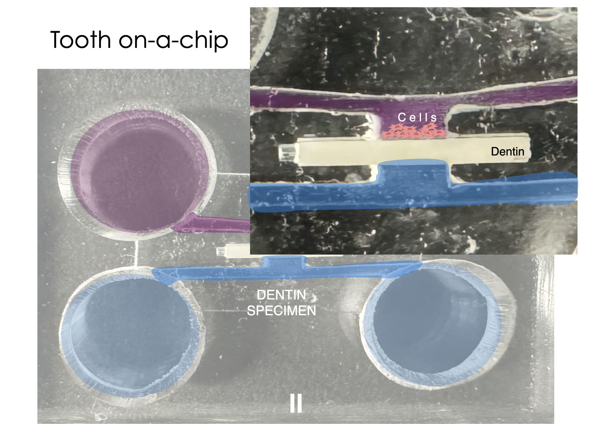
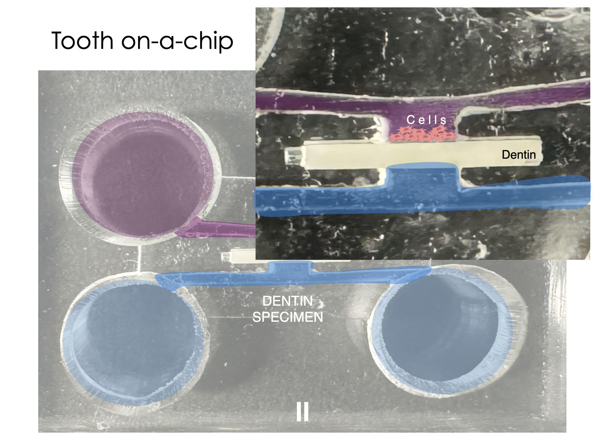

A Universal Microchip for Cytocompatibility Study:
With a 3D printed mold, we used polymers made from mixing silicone elastomer (Sylgard 184) and its curing agent at a 10:1 ratio to copy the detailed structure of the mold. A dentin is placed in the middle of the channel, cell suspension is introduced from the top of the chip, and microscopy images are taken to study the cell behaviors over the course of time.
When microscopy image is taken after staining, it is observed that cells percipitate and proliferate on top of the dentin disk. Boundaries between individual nucleus aren't apparent enough for quantification of cells. However, it is still helpful to determine the area ratio between red and green regions to understand the cell viability. Hence, a project-specific algorithm is developed and published on a github to calculate this rgb-based area ratio.
 



Current and future work:
Develop a 4-electrode system to monitor cell populations in real-time. Cell membranes act as natural barriers to current flow due to their insulating lipid bilayer and surface charge, meaning that an increase in the number of live cells within a fixed-volume medium will likely result in higher electrical resistance. The 4-electrode system, which uses one pair of electrodes for voltage measurement and another pair for current supply, minimizes interference from capacitive effects at the electrode-solution interface, thereby enhancing the accuracy of the voltage measurements. Such a design should enable us to observe qualitative change in the device.